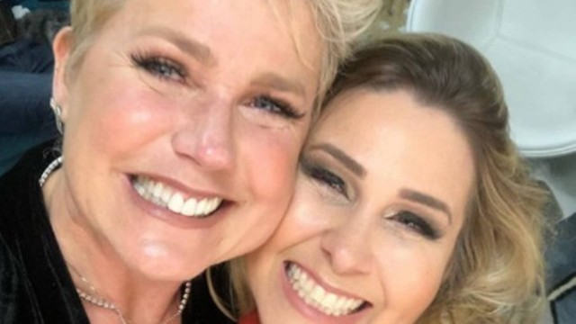
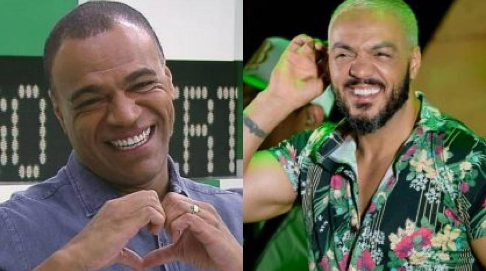

3 amizades de famosos que chegaram ao fim
Lista reúne relações rompidas de Anitta, Xuxa e outros

Anitta e Preta Gil
Em 2020, vazou um áudio em que Anitta dizia que, em certa ocasião, Jojo Todynho havia visto no celular de Gominho um grupo de WhatsApp formado por ele, Preta Gil e Pabllo Vittar, usado para falar mal da Poderosa. A cantora cortou relação com os três, mas a história foi desmentida por Preta Gil. Só que a relação entre as artistas nunca mais foi a mesma.

Xuxa e Andréa Sorvetão
Política foi o motivo da desavença entre Xuxa e a ex-paquita Andréa Sorvetão. Em 2022, enquanto a Rainha dos Baixinhos apoiou Lula (PT), a pupila quis Jair Bolsonaro (PL) novamente como presidente. “Vejo intolerância grande da parte de esquerdistas”, disparou a bolsonarista em entrevista ao NaTelinha no ano passado.

Belo e Denilson
Grandes parceiros no passado, Belo e Denilson também não se dão bem nos dias atuais. O ex-jogador de futebol resolveu investir no Soweto, grupo de pagode do qual o amigo era líder nos anos 1990. Quando o artista seguiu para uma carreira solo, o conjunto não fez mais sucesso. A briga se estendeu na justiça, e antigo craque cobra até hoje uma fortuna do desafeto